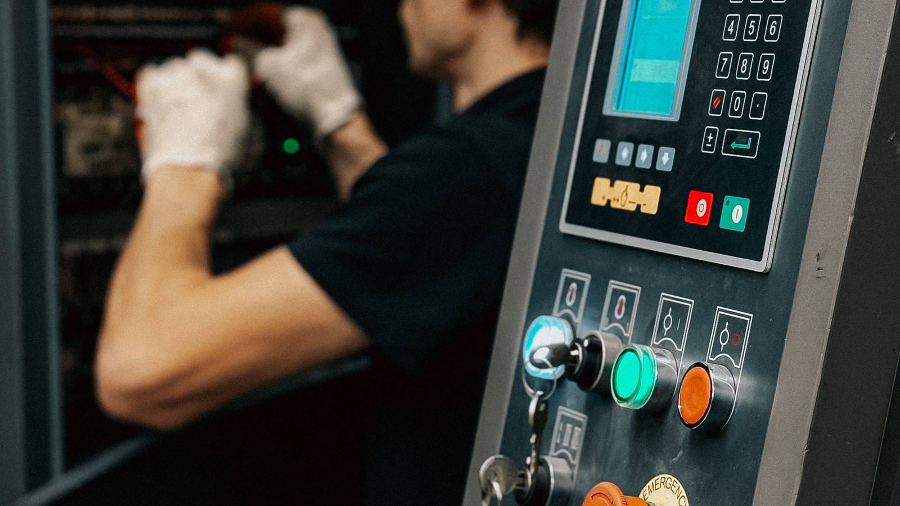

El mercado mundial de maquinaria para procesamiento de alimentos se estima en USD 88.210 millones en 2026, frente a los USD 83.480 millones de 2025, y proyecta llegar a USD 116.180 millones hacia 2031 con un crecimiento anual del 5,67%. Detrás de esas cifras hay un fenómeno menos visible pero más relevante para una planta mediana: el equipo reacondicionado dejó de ser un recurso de emergencia.

Por qué el reacondicionado dejó de ser plan B
Muchas plantas necesitan aumentar capacidad o automatizar procesos, pero la inversión en equipo nuevo no siempre calza con sus ciclos financieros. El reacondicionamiento industrial pasó de ser una opción marginal a una estrategia con respaldo técnico: permite incorporar capacidad productiva a una fracción del costo y con plazos de entrega mucho menores.
Tres fuerzas empujan en la misma dirección en 2026: la presión sobre los márgenes, que obliga a automatizar; regulaciones europeas que exigen actualizar equipos antes de 2027; y el crecimiento de la economía circular, un mercado valorado en unos USD 584 mil millones en 2023 y que crece a un 22,5% anual. Comprar usado ya no se lee como una señal de debilidad financiera, sino como una decisión de eficiencia.
Qué revisar antes de comprar
Un equipo usado bien elegido rinde durante años; uno mal elegido se transforma en una planta detenida. Estos son los puntos que revisamos antes de recomendar una compra:
- Historial de mantenimiento documentado. Es el dato más revelador y el que más se omite. Una máquina de quince años con bitácora completa vale más que una de cinco sin registro alguno.
- Disponibilidad de repuestos. Antes del precio, confirmar que el fabricante sigue operando y que las piezas críticas se consiguen. Un equipo huérfano es chatarra cara.
- Compatibilidad sanitaria. Superficies en contacto con alimento, materiales, soldaduras y diseño higiénico deben resistir una auditoría. Un equipo que no cumple obliga a rehacer la inversión.
- Tablero y sistema de control. Es donde más se nota un reacondicionamiento serio. Un tablero intervenido sin planos ni documentación es un riesgo operacional permanente.
- Capacidad real, no nominal. La ficha técnica declara el máximo teórico; el rendimiento efectivo con su producto y su nivel de humedad puede ser bastante menor.
- Costo total, no precio de compra. Sumar traslado, montaje, adecuación eléctrica, puesta en marcha y capacitación. Suele representar una porción relevante del total.
La tendencia: empezar con una base y escalar
El patrón dominante en 2026 es el modelo de base más escala: instalar una línea semiautomática que resuelva el cuello de botella actual y sumar automatización después, a medida que el volumen la justifique. Las líneas semiautomáticas siguen dominando las instalaciones existentes, aunque los equipos inteligentes registran la adopción más rápida.
Para una planta de fruta deshidratada, ese enfoque suele traducirse en priorizar selección y calibrado antes que envasado: es donde el cuello de botella golpea primero cuando sube el volumen exportado.
¿Qué significa esto para el sector? — La mirada de Prunavita
Compramos y vendemos maquinaria agroindustrial, así que vemos las dos caras de esta operación. Y el error más frecuente no es pagar de más: es comprar capacidad que la planta no puede alimentar. Una línea de gran rendimiento instalada donde el cuello de botella está en la recepción de materia prima no mejora nada.
El segundo error es dejar la inocuidad para el final. Un equipo puede ser mecánicamente impecable y aun así no pasar una auditoría por diseño higiénico. Conviene revisar ese punto antes de comprar, no después: es parte de lo que trabajamos en nuestras asesorías técnicas en calidad e inocuidad.
Fuentes consultadas: Mordor Intelligence (tamaño y proyección del mercado) y FoodNewsLatam (reacondicionamiento industrial). Análisis y redacción: equipo Prunavita.